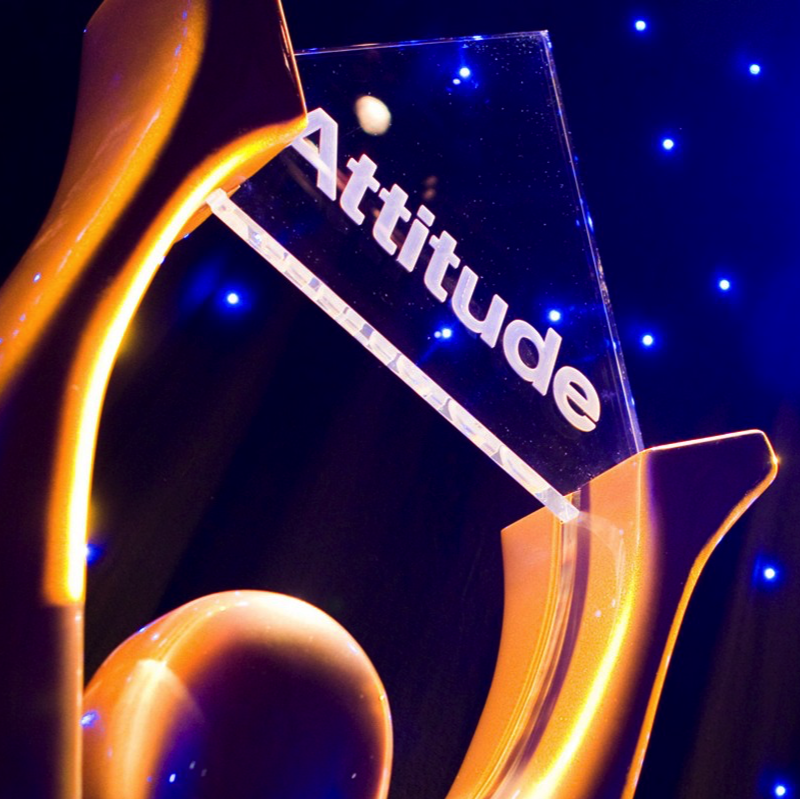

Achievements
Gary Endacott has served as Disability Facilitator for the Ministry of Education of New Zealand. He has worked to ensure the best possible outcomes for children with disabilities. He was the first person with a physical difference to climb Mount Kilimanjaro. Gary’s contributions to inclusion are extensive, especially in the world of sports where he has regularly excelled. He completed the New York City Marathon four times and became a world disabled tennis champ.
-
4 New York Marathons
Gary ran the New York marathon 4 times and was the first person with cerebral palsy to complete it on foot.
-

Tennis Champion
Gary was NZ and World disabled tennis champion in the standing division.
-
Mount Kilimanjaro
Gary became the first person with cerebral palsy to climb Mount Kilimanjaro.
-
Various Awards
Gary has received many other awards over the years:
- Rugby League sports personality of the year
- 2010 Corbett Ryan Pathways Pioneer Awards
- Canterbury Disabled sports person of the year
- Sir Richard Hadlee awards - Sports personality of the year
-

Attitude Award
In 2013, Gary was the inaugural winner of the people's choice Attitude Award.